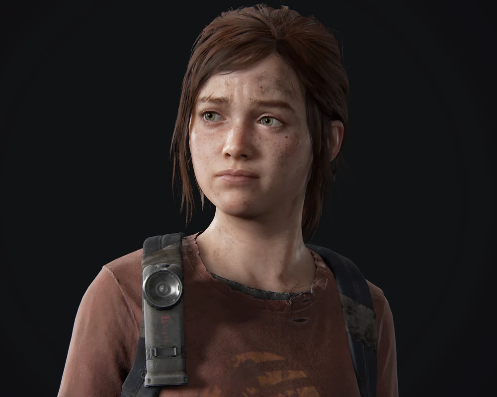

|
Joel |
Un hombre endurecido por la vida y la pérdida. Tras la muerte de su hija, Joel se convierte en un superviviente implacable, capaz de hacer lo que sea necesario para protegerse y sobrevivir, especialmente cuando se encuentra con Ellie. |
|  |
Ellie |
Una joven valiente que ha crecido en un mundo peligroso. Aunque parece una niña al principio, Ellie demuestra ser más madura y capaz que muchos adultos, convirtiéndose en una pieza clave en la lucha por la supervivencia. |
 |
Tess |
Aliada de Joel, Tess es una mujer fuerte y decidida. Comparte con él un pasado complicado y, aunque su relación está llena de tensiones, su lealtad a veces es lo que les mantiene a salvo en este mundo caótico. |
 |
Bill |
Un superviviente desconfiado y paranoico. Aunque se muestra reacio a ayudar a otros, Bill es un personaje crucial que conoce bien los peligros del mundo y tiene las habilidades necesarias para sobrevivir. |
 |
Tommy |
El hermano menor de Joel, con un enfoque más idealista sobre la supervivencia. Después de separarse de Joel, Tommy se convierte en un líder dentro de su comunidad y tiene un punto de vista diferente sobre cómo reconstruir la sociedad. |